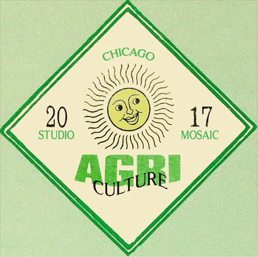

Studio Mosaic Opens Shop welcomes everyone to join four days of curated events exploring music, art, cross-cultural organizing, and community gardening at the Comfort Station in Logan Square, Chicago as a part of the P.O.W.E.R. Project.
Events include:
The Comfort Station will be transformed into an ‘empowerment hub’ with a series of lectures, discussions, happenings, self-care exercises, and much more led by artists and members from the community. The hope is that through series of engagements, people will be able to not only to lead their own actions but inspire others to take a stand against injustice and intolerance. The only way we can make it through these uncertain times is to do it together.

What About Chicago? is a weekly audio show/podcast exploring the cutting edge of live art, music and cultural performances going on in and around the great city of Chicago. Hosted by accomplished Musician/Raconteur Rahim "Rageing" Salaam and his mysterious Conscience. The live podcast session will include special guest Leone Jose Bicchieri of Working Family Solidarity and Skylar Dunn-Lubin from Studio Mosaic.
Listen to the episode here!As all eyes fall on America during our time of social, racial, gender, climate, and political dysfunction co-occurring alongside technological, medical, electric automobile, and renewable energy infrastructure innovation, we tend to ask ourselves where do we go next? What do we do now? And how do we reclaim our dignity in a nation mired by hate, intolerance, oppression, and rampant anti-social individualism?
As a potential inroad to addressing some of these hyper complex dynamics of our current times, 2-POC provided an example of an art exhibit featuring young, local chicago artists working in the meeting grounds of social identity, self expression, and solidarity. Having opened on the birthday of Tupac Shakur, the show looked to the musician as an inspirational example of a single highly influential person of color who elegantly and skillfully navigated the turbulent waters between activism, authenticity, self-awareness, and artistic production.
The show sought to tackle these numerous issues in a way that was exploratory, real, personal, communal, and alive.
Featuring: Tatianna Howard, Thumy Phan, Kalya Jacobs, Erik Salgado, Jazmín Dua, Skylar Dunn-Lubin, Juls Mandal, Jacob Koch, Ray Bees, Abena Motaboli


A live DJ set exploring the Midwest house & techno music. This event will also feature informational zines about the roots of house music and its early connection to African-American and gay audiences in Chicago.
[VIDEO GOES HERE]
[IMAGES GO HERE]
[SOUNDCLOUD RECORDING GOES HERE]

Til the Grid Turns Green looks deeper into the groups who are actively turning the infamous Chicago Grid green. Studio Mosaic, Glad Matt, and Comfort Station POWER Project showcase the landscape of Chicago’s urban farming community and agricultural sector in a way that’s aware of Chicago’s complex socioeconomics.
Studio Mosaic reached out to Glad Matt from Hostel Grow Op to bring together Chicago-based farmers and activists to create an afternoon of workshops and discussions exploring community gardening, sustainability, the food supply chain, backyard farming, the bartering economy, and what “local” actually means.
Featured speakers: